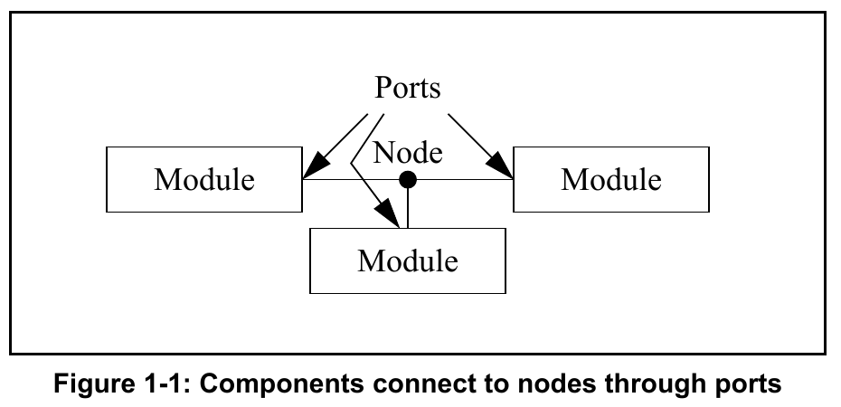
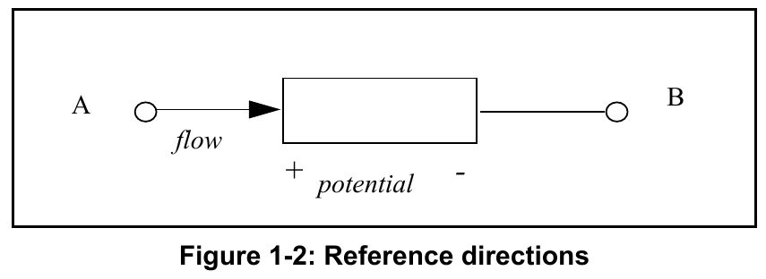
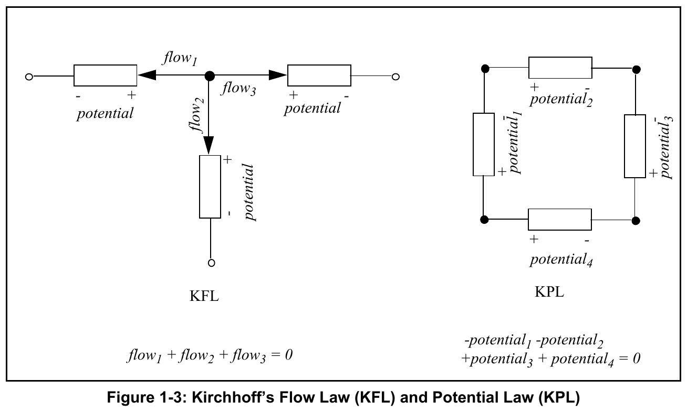

This Verilog-AMS Hardware Description Language (HDL) language reference manual defines a behavioral language for analog and mixed-signal systems. Verilog-AMS HDL is derived from IEEE Std 1364-2005 Verilog HDL (referred to as IEEE Std 1364 Verilog from this point forward). This document is intended to cover the definition and semantics of Verilog-AMS HDL as proposed by Accellera.
Verilog-AMS HDL consists of the complete IEEE Std 1364 Verilog specification, an analog equivalent for describing analog systems (also referred to as Verilog-A as described in Annex C), and extensions to both for specifying the full Verilog-AMS HDL.
Verilog-AMS HDL lets designers of analog and mixed-signal systems and integrated circuits create and use modules which encapsulate high-level behavioral descriptions as well as structural descriptions of systems and components. The behavior of each module can be described mathematically in terms of its ports and external parameters applied to the module. The structure of each component can be described in terms of interconnected sub-components. These descriptions can be used in many disciplines such as electrical, mechanical, fluid dynamics, and thermodynamics.
For continuous systems, Verilog-AMS HDL is defined to be applicable to both electrical and non-electrical systems description. It supports conservative and signal-flow descriptions by using the concepts of nets, nodes, branches, and ports as terminology for these descriptions. The solution of analog behaviors which obey the laws of conservation fall within the generalized form of Kirchhoff’s Potential and Flow Laws (KPL and KFL). Both of these are defined in terms of the quantities (e.g., voltage and current) associated with the analog behaviors.
Verilog-AMS HDL can also be used to describe discrete (digital) systems (per IEEE Std 1364 Verilog) and mixed-signal systems using both discrete and continuous descriptions as defined in this LRM.
Verilog-AMS HDL extends the features of the digital modeling language (IEEE Std 1364 Verilog) to provide a single unified language with both analog and digital semantics with backward compatibility. Below is a list of salient features of the resulting language:
initial, always, and analog procedural blocks can appear in the same moduleanalog procedural blockanalog procedural blockinitial and always blocks remain the same as in IEEE Std 1364 Verilog; the semantics for the analog block are described in this manualdiscipline declaration is extended to digital signalsconnect statement, is added to facilitate auto-insertion of user-defined connection modules between the analog and digital domainsA system is considered to be a collection of interconnected components which are acted upon by a stimulus and produce a response. The components themselves can also be systems, in which case a hierarchical system is defined. If a component does not have any subcomponents, it is considered to be a primitive component. Each primitive component connects to zero or more nets. Each net connects to a signal which can traverse multiple levels of the hierarchy. The behavior of each component is defined in terms of values at each net.
A signal is a hierarchical collection of nets which, because of port connections, are contiguous. If all the nets which make up a signal are in the discrete domain, the signal is a digital signal. If, on the other hand, all the nets which make up a signal are in the continuous domain, the signal is an analog signal. A signal which consists of nets from both domains is called a mixed signal.
Similarly, a port whose connections are both analog is an analog port, a port whose connections are both digital is a digital port, and a port whose connections are both analog and digital is a mixed port. The components connect to nodes through ports and nets to build a hierarchy, as shown in Figure 1-1.

If a signal is analog or mixed, it is associated with a node (see 3.6), while a purely digital signal is not associated with a node. Regardless of the number of analog nets in an analog or mixed signal or how the analog nets in a mixed signal are interspersed with digital nets, the analog portion of an analog or mixed signal is represented by only a single node. This guarantees a mixed or analog signal has only one value which represents its potential with respect to the global reference voltage (ground).
In order to simulate systems, it is necessary to have a complete description of the system and all of its components. Descriptions of systems are usually given structurally. That is, the description of a system contains instances of components and how they are interconnected. Descriptions of components are given using behavior and/or structure. A behavior is a mathematical description which relates the signals at the ports of the components.
An important characteristic of conservative systems is that there are two values associated with every node, the potential (also known as the across value or voltage in electrical systems) and the flow (the through value or current in electrical systems). The potential of the node is shared with all continuous ports and nets connected to the node so all continuous ports and nets see the same potential. The flow is shared so flow from all continuous ports and nets at a node shall sum to zero (0). In this way, the node acts as an infinitesimal point of interconnection in which the potential is the same everywhere on the node and on which no flow can accumulate. Thus, the node embodies Kirchhoff's Potential and Flow Laws (KPL and KFL). When a component connects to a node through a conservative port or net, it can either affect, or be affected by, either the potential at the node, and/or the flow onto the node through the port or net.
With conservative systems it is also useful to define the concept of a branch. A branch is a path of flow between two nodes through a component. Every branch has an associated potential (the potential difference between the two nodes) and flow.
A behavioral description of a conservative component is constructed as a collection of interconnected branches. The constitutive equations of the component are formulated so as to relate the branch potentials and flows. Refer to 5.4.2 for further details on the probe/source approach.
The potential of a single node is given with respect to a reference node. The potential of the reference node, which is called ground in electrical systems, is always zero (0). Any net of continuous discipline can be declared to be ground. In this case, the node associated with the net shall be the global reference node in the circuit. This is compatible with all analog disciplines and can be used to bind a port of an instantiated module to the reference node.
The reference directions for a generic branch are shown in Figure 1-2.

The reference direction for a potential is indicated by the plus and minus symbols near each port. Given the chosen reference direction, the branch potential is positive whenever the potential of the port marked with a plus sign (A) is larger than the potential of the port marked with a minus sign (B). Similarly, the flow is positive whenever it moves in the direction of the arrow (in this case from + to -).
Verilog-AMS HDL uses associated reference directions. A positive flow enters a branch through the port marked with the plus sign and exits the branch through the port marked with the minus sign.
In formulating continuous system equations, Verilog-AMS HDL uses two sets of relationships. The first are the constitutive relationships which describe the behavior of each component. Constitutive relationships can be kept inside the simulator as built-in primitives or they can be provided by Verilog-AMS HDL module definitions.
The second set of relationships, interconnection relationships, describe the structure of the network. Interconnection relationships, which contain information on how the components are connected to each other, are only a function of the system topology. They are independent of the nature of the components.
A Verilog-AMS HDL simulator uses Kirchhoff’s Laws to define the relationships between the nodes and the branches. Kirchhoff’s Laws are typically associated with electrical circuits that relate voltages and currents. However, by generalizing the concepts of voltages and currents to potentials and flows, Kirchhoff’s Laws can be used to formulate interconnection relationships for any type of system.
Kirchhoff’s Laws provide the following properties relating the quantities present on nodes and branches, as shown in Figure 1-3.
0).0).These laws imply a node is infinitely small; so there is negligible difference in potential between any two points on the node and a negligible accumulation of flow.

Verilog-AMS HDL allows definition of nets based on disciplines. The disciplines associate potential and flow natures for conservative systems or either only potential or only flow nature for signal-flow systems. The natures are a collection of attributes, including user-defined attributes, which describes the units (meter, gram, newton, etc.), absolute tolerance for convergence, and the names of potential and flow access functions.
The disciplines and natures can be shared by many nets. The compatibility rules help enforce the legal operations between nets of different disciplines.
A discipline may specify two nature bindings, potential and flow, or it may specify only a single binding, either potential or flow. Disciplines with two natures are know as conservative disciplines because nodes which are bound to them exhibit Kirchhoff’s Flow Law, and thus, conserve charge (in the electrical case). A discipline with only a potential nature or only a flow nature is known as a signal flow discipline.
As a result of port connections of analog nets, a single node may be bound to a number of nets of different disciplines. If a node is bound only to disciplines which have potential nature only, current contributions to that node are not legal. Flow for such a node is not defined. Conversely, if a node is bound only to disciplines which have flow nature only, potential contributions to that node are not legal. Potential for such a node is not defined.
Potential signal flow models may be written so potentials of module outputs are purely functions of potentials at the inputs without taking flow into account.
The following example is a level shifting voltage follower:
module shiftPlus5(in, out);
input in;
output out;
voltage in, out; //voltage is a signal flow
//discipline compatible with
//electrical, but having a
//potential nature only
analog begin
V(out) <+ 5.0 + V(in);
end
endmoduleIf a number of such modules were cascaded in series, it would not be necessary to conserve charge (i.e., sum the flows) at any intervening node.
If, on the other hand, the output of this device were bound to a node of a conservative discipline (e.g., electrical), then the output of the device would appear to be a controlled voltage source to ground at that node. In that case, the flow (i.e., current) through the source would contribute to charge conservation at the node. If the input of this device were bound to a node of a conservative discipline then the input would act as a voltage probe to ground. Thus, when a net of signal flow discipline with potential nature only is bound to a conservative node, contributions made to that net behave as voltage sources to ground.
Nets of potential signal flow disciplines in modules may only be bound to input or output ports of the module, not to inout ports. In that case, potential contributions may not be made to input ports.
Flow signal-flow models may be written so flows of module outputs are purely functions of flows at the inputs without taking potential into account.
The following example is a current mirror:
module currmir(in, out);
input in;
output out;
current in, out; // current is a signal flow
// discipline compatible with
// electrical, but having a
// flow nature only
analog begin
I(out) <+ -I(in);
end
endmoduleIf a number of such modules were cascaded in series, it would not be necessary to conserve charge (i.e., sum the potentials) at any loop of branches.
However, if the output of this device were bound to a node of a conservative discipline (e.g., electrical), then the output of the device would appear to be a controlled current source flowing out of that node. In that case, the potential (i.e., voltage) across the source would contribute to charge conservation at the node. If the input of this device were bound to a node of a conservative discipline then the input would act as a current probe inbound from that node. Thus, when a net of signal flow discipline with flow nature only is bound to a conservative node, contributions made to that net behave as current sources.
Nets of flow signal-flow disciplines in modules may only be bound to input or output ports of the module, not to inout ports. Flow contributions may not be made to input ports in this case.
When practicing the top-down design style, it is extremely useful to mix conservative and signal-flow components in the same system. Users typically use signal-flow models early in the design cycle when the system is described in abstract terms, and gradually convert component models to conservative form as the design progresses. Thus, it is important to be able to initially describe a component using a signal-flow model, and later convert it to a conservative model, with minimum changes. It is also important to allow conservative and signal-flow components to be arbitrarily mixed in the same system.
The approach taken is to write component descriptions using conservative semantics, except port and net declarations only require types for those values which are actually used in the description. Thus, signal-flow ports only require the type of either potential or flow to be specified, whereas conservative ports require types for both values (the potential and flow).
For example, consider a differential voltage amplifier, a differential current amplifier, and a resistor. The amplifiers are written using signal-flow ports and the resistor uses conservative ports.
module voltage_amplifier (out, in);
input in;
output out;
voltage out, // Discipline voltage defined elsewhere
in; // with access function V()
parameter real GAIN_V = 10.0;
analog
V(out) <+ GAIN_V * V(in);
endmoduleIn this case, only the voltage on the ports are declared because only voltage is used in the body of the model.
module current_amplifier (out, in);
input in;
output out;
current out, // Discipline current defined elsewhere
in; // with access function I()
parameter real GAIN_I = 10.0;
analog
I(out) <+ GAIN_I * I(in);
endmoduleHere, only current is used in the body of the model, so only current need be declared at the ports.
module resistor (a, b);
inout a, b;
electrical a, b; // access functions are V() and I()
parameter real R = 1.0;
analog
V(a,b) <+ R * I(a,b);
endmoduleThe description of the resistor relates both the voltage and current on the ports. Both are defined in the conservative discipline electrical.
In summary, only those signals types declared on the ports are accessible in the body of the model. Conversely, only those signals types used in the body need be declared.
This approach provides all of the power of the conservative formulation for both signal-flow and conservative ports, without forcing types to be declared for unused signals on signal-flow nets and ports. In this way, the first benefit of the traditional signal-flow formulation is provided without the restrictions.
The second benefit, that of a smaller, more efficient set of equations to solve, is provided in a manner which is hidden from the user. The simulator begins by treating all ports as being conservative, which allows the connection of signal-flow and conservative ports. This results in additional unnecessary equations for those nodes which only have signal-flow ports. This situation can be recognized by the simulator and those equations eliminated.
Thus, this approach to allowing mixed conservative/signal-flow descriptions provides the following benefits:
This document is organized into sections, each of which focuses on some specific area of the language. There are subsections within each section to discuss individual constructs and concepts. The discussion begins with an introduction and an optional rationale for the construct or the concept, followed by syntax and semantic description, followed by some examples and notes.
The formal syntax of Verilog-AMS HDL is described using Backus-Naur Form (BNF). The following conventions are used:
The main text uses italicized font when a term is being defined, and constant-width font for examples, file names, and while referring to constants. Reserved keywords in the main text and in examples are in a constant-width bold font.
This document contains the following clauses and annexes:
1. Verilog-AMS introduction
This clause gives the overview of analog modeling, defines basic concepts, and describes Kirchhoff’s Potential and Flow Laws.
2. Lexical conventions
This clause defines the lexical tokens used in Verilog-AMS HDL.
3. Data types
This clause describes the data types: integer, real, parameter, nature, discipline, and net, used in Verilog-AMS HDL.
4. Expressions
This clause describes expressions, mathematical functions, and time domain functions used in Verilog-AMS HDL.
5. Analog behavior
This clause describes the basic analog block and procedural language constructs available in Verilog-AMS HDL for behavioral modeling.
6. Hierarchical structures
This clause describes how to build hierarchical descriptions using Verilog-AMS HDL.
7. Mixed signal
This clause describes the mixed-signal aspects of the Verilog-AMS HDL language.
8. Scheduling semantics
This clause describes the basic simulation cycle as applicable to Verilog-AMS HDL.
9. System tasks and functions
This clause describes the system tasks and functions in Verilog-AMS HDL.
10. Compiler directives
This clause describes the compiler directives in Verilog-AMS HDL.
11. Using VPI routines
This clause describes how the VPI routines are used.
12. VPI routine definitions
This clause defines each of the VPI routines in alphabetical order.
A. (normative) Formal syntax definition
This annex describes formal syntax for all Verilog-AMS HDL constructs in Backus-Naur Form (BNF).
B. (normative) List of keywords
This annex lists all the words which are recognized in Verilog-AMS HDL as keywords.
C. (normative) Analog language subset
This annex describes the analog subset of Verilog-AMS HDL.
D. (normative) Standard definitions
This annex provides the definitions of several natures, disciplines, and constants which are useful for writing models in Verilog-AMS HDL.
E. (normative) SPICE compatibility
This annex describes the Spice compatibility with Verilog-AMS HDL.
F. (normative) Discipline resolution methods
This annex provides the semantics for two methods of resolving the discipline of undeclared interconnect.
G. (informative) Change history
This annex provides a list of changes between various versions of the Verilog-AMS Language Reference Manual.
H. (informative) Glossary
This annex describes various terms used in this document.